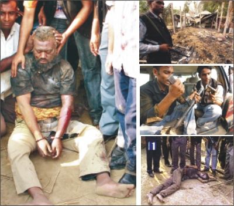

|
|
|
|
|
|
|
|
|
|
|
|
|
|
||
|
|
||||
|
|
|
Late Night
News: Published on May 03, 2009
 The Chief of Jagrata Muslim Janata Bangladesh, Bangla Bhai alias Siddiqur Rahaman at last surrendered to the police severely injured:
After obtaining information on latest hideouts
of most wanted militant Islamic leader named Siddiqur Rahman,
popularly known as Bangla Bhai from arrested JMB Chief, Shayekh
Abdur Rahamn a strong intelligent team accompanied by strong RAB
contingent and armed Police rushed to Mymensigh and raided a house
in the city, R K Mission Road, this morning (March 6, 2006) at about
5-30 a.m. They found Fahima, wife of Bangla Bhahi living there with
her minor child Saad. Police arrested them and a few inmates too.
After obtaining information from the wife the team rushed to
Muktagachha, a small township about 30 km from Mymensigh. The team
took the wife as their guide who showed the house, a small tin shade
semi pucca house consisting of 2 or 3 rooms, in a nearby village
named Rampur, where Bangla Bhai was hiding (?), rather living openly
with a group of his associates. The armed contingent immediately
encircled the house and went into operation. Exchange of fire took
place for a few minutes when a bullet from inside the house wounded
a police officer. It was found later that Bangla Bhai himself fired
the officer when he peeped into the house from the roof of another
nearby house using a submachine gun carbine. At this stage the
commanding officer of the operation team asked Bangla Bhai to
surrender, as there was no escape route for his safe retreat. The
exchange of bullets continued for some time. After some time a
violent explosion (s) took place and the tin shed house was blown
out and fire was set out. After some time when the smoke was clear a
big fatty bearded man was found with submachine gun holding in his
right wounded hand receiving severe injuries from his own bomb
explosions. And another man later identified as his bodyguard Masud
was laid on the floor unconscious in a seriously injured and burnt
condition. The bearded big and fatty man was immediately identified
as Bangla Bhai, alias Siddiqul Islam, alias Siddiqur Rahman. It was
later found in the hospitals that Banglabhai received injuries all
over the body- he had burn injuries on his right hand, all over the
chest, upper abdomen, left part of the body and testicles. Later
x-ray photograph taken at BDR hospital showed that he had some
splinters inside the stomach. Both injured men were arrested at
about 7-45 a.m. and both were brought to Muktagachha health complex
at least for preliminary treatment. As the condition was getting
worst both wounded persons were taken to Mymensigh Medical College
Hospital. Bangla Bahi was then airlifted and taken to combined
Military Hospital. After being treated there he was finally moved to
BDR hospital at Pilkhana in the afternoon around 5-30 p.m. It is
learnt that ‘he is now out of danger and stable’, to quote from
state minister of interior affairs, Mr. Babar.
I will not call it a drama, but will call the
arrest of Shayek Rahman followed by arrest of militant and killer
Bangla Bhai is preplanned and a result of understanding between the
leaders of JMB and JMJB and the government because these militant
leaders and their organizations were made, nourished and developed
by a well known Islamic partner of the 4-party alliance well
supported by the present government of Bangladesh led by Begum
Khaleda Zia.
I will just remind our readers two counts:
There must have gone something behind the
scene, which led to some understanding between the militants, and
the government that ultimately resulted the drama of arrest of two
top Islamic militant leaders. The arrests of these Islamic
fundamentalist who believes in armed Islamic revolution to establish
Allah’s laws in BD and other Islamic terrorists operating in BD are
not myths and creation of media as has been constantly claimed by
the government and ruling parties, they are real threat to our
Motherland. Since the fall of Talebans in Afghanistan the
secularists of the country have been warning of the violent rise of
Islamic terrorism if proper steps were not taken.
Liberal-secular-democratic forces of the country forewarned that
many militant fundamentalist organizations are operating in BD, and
pointed out the outdated Madrasahs are being used as training
centres of these militants. But Government and its 4-party alliance
laughed at our fear. Government cannot escape from its
responsibility for creation of Banagla Bhais and Shayekh Abdur
Rahmans ….
The revolutionary leaders do not live openly as
did Bangla Bhai and his spiritual leader Shayekh Abdur Rahman. The
million dollar question is why they did ? Why Bangla Bhai did not
attempt to flee away after the arrest of his wife at Mymensigh city
? Where was their so-called efficient network through which they
conducted their armed activities since September? So there must be
something mysterious which need to be solved. Khaleda – Nizami
Government and the parties of the Islamic alliance must prove beyond
doubt that did not have any hand in the rise of Islamic
fundamentalism that encouraged Islamic militantancy in Bangladesh.
State minister for home affairs, Mr.
Lutfuzzaman Babar admitted finally that, in answer to a question
posed by a local correspondent, Banglabhai is a reality now, as the
circumstances proved, and no more a creation of media. At last Mr.
Babar you have eaten your own words. The PM in her reaction said in
a mass meeting that arrest of Banglabhai is yet another success of
her Government. Bravo madam PM.
(Source: Late night news of different
Bangladesh channels)
Ajoy Roy
Dhaka, March 6, 2006
|
|
|
|
|
|
|
||
|
|
||||
|
|
|
|
|